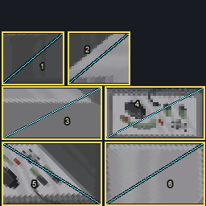
pz_house_premium_hamG013 interiores · 6 charts · 256 px

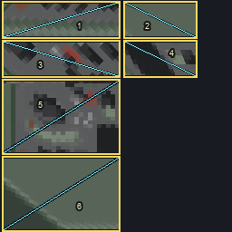
pz_house_army_hamG013 interiores · 6 charts · 256 px

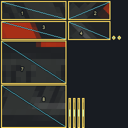
pz_house_toys_walkieG013 interiores · 12 charts · 256 px

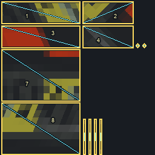
pz_house_value_walkieG013 interiores · 12 charts · 256 px

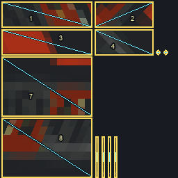
pz_house_premium_walkieG013 interiores · 12 charts · 256 px

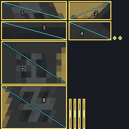
pz_house_tactical_walkieG013 interiores · 12 charts · 256 px

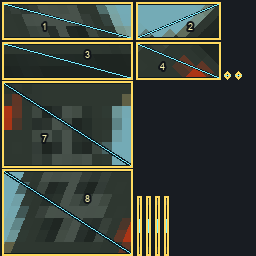
pz_house_army_walkieG013 interiores · 12 charts · 256 px

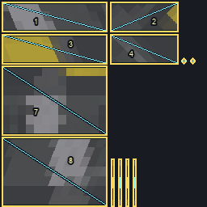
pz_house_makeshift_walkieG013 interiores · 12 charts · 256 px

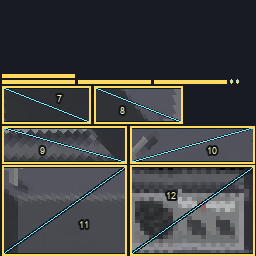
pz_house_value_radioG013 interiores · 12 charts · 256 px

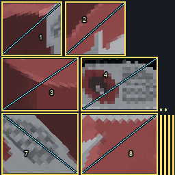
pz_house_premium_radioG013 interiores · 12 charts · 256 px

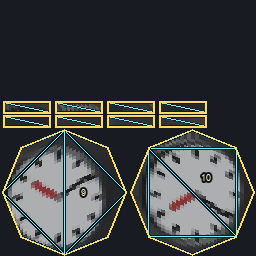
pz_house_clock_roundG013 interiores · 10 charts · 256 px

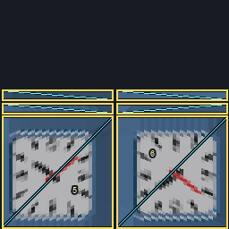
pz_house_clock_squareG013 interiores · 6 charts · 256 px

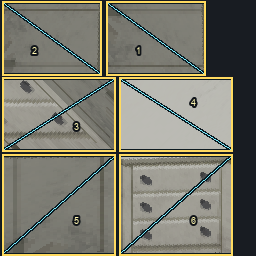
pz_house_drawers_whiteG013 interiores · 6 charts · 256 px

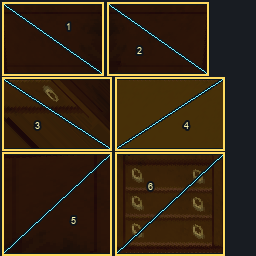
pz_house_drawers_oakG013 interiores · 6 charts · 256 px

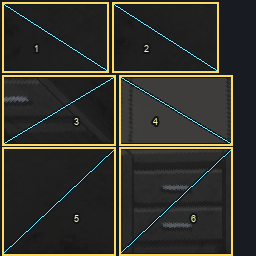
pz_house_drawers_darkG013 interiores · 6 charts · 256 px

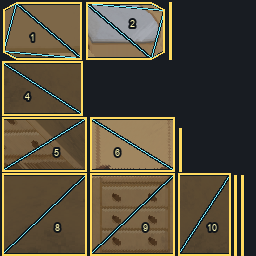
pz_house_drawers_mirrorG013 interiores · 12 charts · 256 px

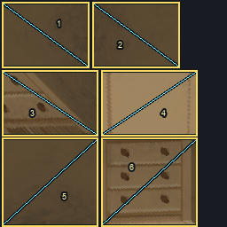
pz_house_drawers_lightwoodG013 interiores · 6 charts · 256 px

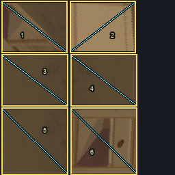
pz_house_drawers_bedroomG013 interiores · 6 charts · 256 px

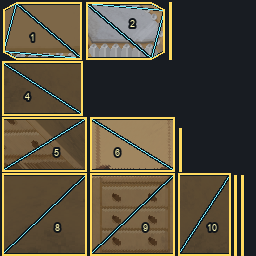
pz_house_drawers_lit_mirrorG013 interiores · 12 charts · 256 px

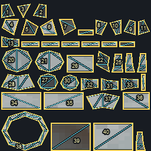
pz_house_toilet_tankG013 interiores · 41 charts · 256 px

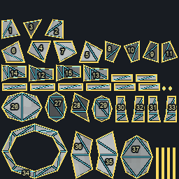
pz_house_toilet_lowG013 interiores · 41 charts · 256 px

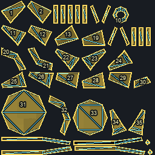
pz_house_lamp_yellowG013 interiores · 41 charts · 256 px

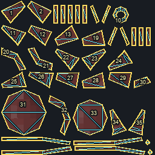
pz_house_lamp_redG013 interiores · 41 charts · 256 px

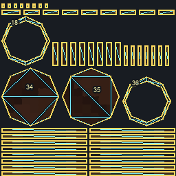
pz_house_stool_barG013 interiores · 52 charts · 256 px

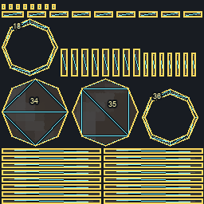
pz_house_stool_blueG013 interiores · 52 charts · 256 px

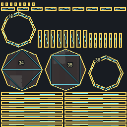
pz_house_stool_dinerG013 interiores · 52 charts · 256 px

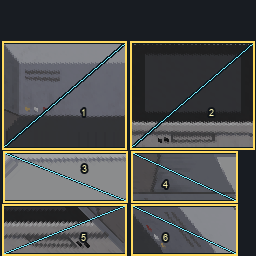
pz_house_tv_premiumG013 interiores · 6 charts · 256 px

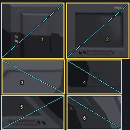
pz_house_tv_valueG013 interiores · 6 charts · 256 px

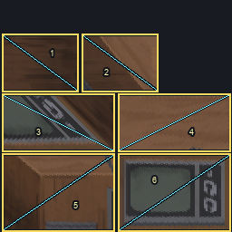
pz_house_tv_antiqueG013 interiores · 6 charts · 256 px

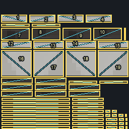
pz_house_bunk_headG013 interiores · 60 charts · 256 px

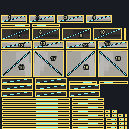
pz_house_bunk_footG013 interiores · 60 charts · 256 px

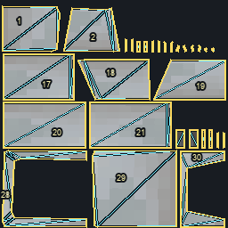
pz_house_bath_headG013 interiores · 30 charts · 256 px

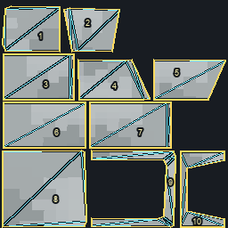
pz_house_bath_footG013 interiores · 10 charts · 256 px


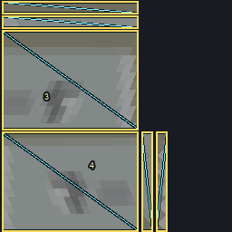
pz_house_switch_1G013 interiores · 6 charts · 256 px

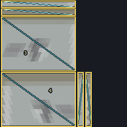
pz_house_switch_4G013 interiores · 6 charts · 256 px
 pz_house_switch_5
pz_house_switch_5G013 interiores · 6 charts · 256 px
 pz_house_switch_0_indicator_on
pz_house_switch_0_indicator_onG013 interiores · 1 charts · 256 px
 pz_house_switch_1_indicator_on
pz_house_switch_1_indicator_onG013 interiores · 1 charts · 256 px

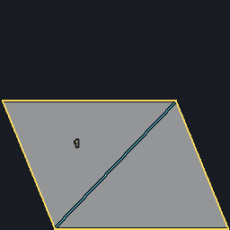
pz_house_switch_4_indicator_onG013 interiores · 1 charts · 256 px

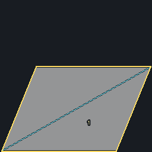
pz_house_switch_5_indicator_onG013 interiores · 1 charts · 256 px

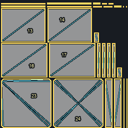
cardboard_boxMod instalado 0.1.11 · 28 charts · 256 px

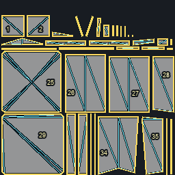
cardboard_dentedMod instalado 0.1.11 · 37 charts · 256 px

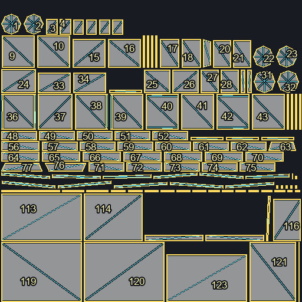
contents_books_misc_01_24Mod instalado 0.1.11 · 123 charts · 512 px

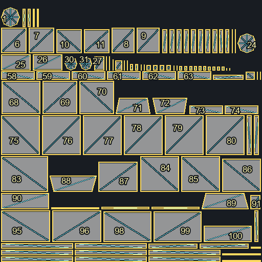
contents_books_misc_01_25Mod instalado 0.1.11 · 113 charts · 512 px

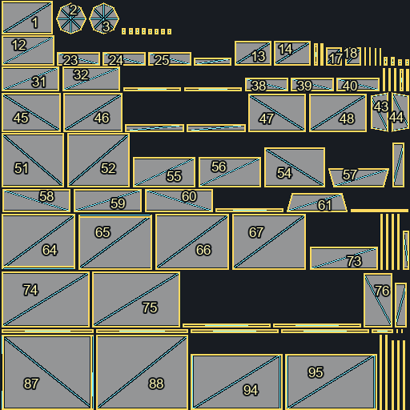
contents_books_misc_01_26Mod instalado 0.1.11 · 95 charts · 512 px

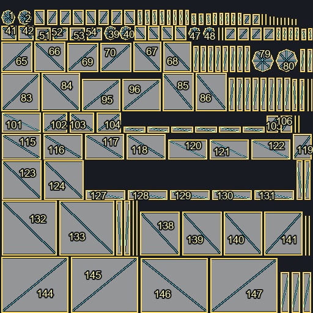
contents_books_misc_01_27Mod instalado 0.1.11 · 150 charts · 512 px

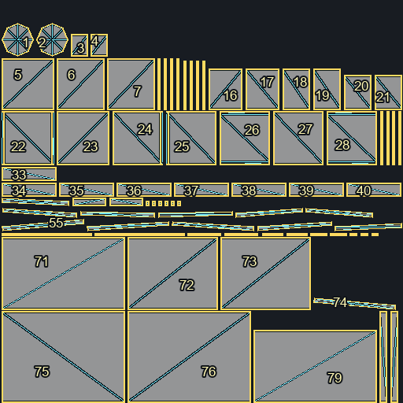
contents_books_misc_01_28Mod instalado 0.1.11 · 79 charts · 512 px

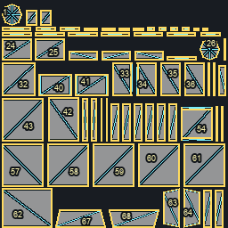
contents_books_misc_01_29Mod instalado 0.1.11 · 68 charts · 256 px

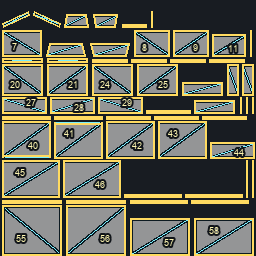
contents_books_misc_01_30Mod instalado 0.1.11 · 58 charts · 256 px

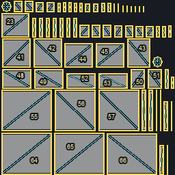
contents_books_misc_01_31Mod instalado 0.1.11 · 68 charts · 256 px
 contents_books_misc_01_48
contents_books_misc_01_48Mod instalado 0.1.11 · 95 charts · 512 px

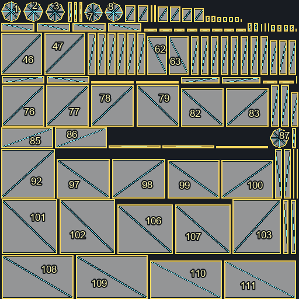
contents_books_misc_01_49Mod instalado 0.1.11 · 111 charts · 512 px
 contents_books_misc_01_50
contents_books_misc_01_50Mod instalado 0.1.11 · 111 charts · 512 px

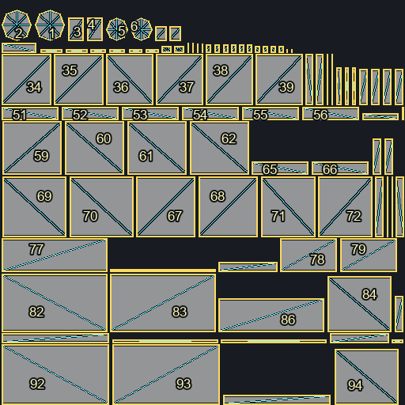
contents_books_misc_01_51Mod instalado 0.1.11 · 95 charts · 512 px
 contents_books_misc_01_52
contents_books_misc_01_52Mod instalado 0.1.11 · 44 charts · 256 px
 contents_books_misc_01_53
contents_books_misc_01_53Mod instalado 0.1.11 · 62 charts · 256 px

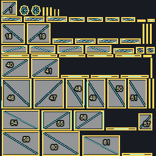
contents_books_misc_01_54Mod instalado 0.1.11 · 62 charts · 256 px


 pz_bed_bedding_01_light_wood_0_0
pz_bed_bedding_01_light_wood_0_0Mod instalado 0.1.11 · 123 charts · 512 px
 pz_bed_bedding_01_light_wood_0_1
pz_bed_bedding_01_light_wood_0_1Mod instalado 0.1.11 · 123 charts · 512 px


 pz_bookcase_oak
pz_bookcase_oakMod instalado 0.1.11 · 38 charts · 256 px


 pz_chair_seating_indoor_01_green_comfy
pz_chair_seating_indoor_01_green_comfyMod instalado 0.1.11 · 69 charts · 256 px
 pz_chair_seating_indoor_01_green_dinner
pz_chair_seating_indoor_01_green_dinnerMod instalado 0.1.11 · 77 charts · 256 px

 pz_chair_seating_indoor_01_modern_red
pz_chair_seating_indoor_01_modern_redMod instalado 0.1.11 · 62 charts · 256 px
 pz_chair_seating_indoor_01_modern_white
pz_chair_seating_indoor_01_modern_whiteMod instalado 0.1.11 · 69 charts · 256 px

 pz_chair_seating_indoor_01_red_comfy
pz_chair_seating_indoor_01_red_comfyMod instalado 0.1.11 · 69 charts · 256 px
 pz_chair_seating_indoor_02_blue_plastic
pz_chair_seating_indoor_02_blue_plasticMod instalado 0.1.11 · 62 charts · 256 px
 pz_chair_seating_indoor_02_blue_rattan
pz_chair_seating_indoor_02_blue_rattanMod instalado 0.1.11 · 131 charts · 512 px
 pz_chair_seating_indoor_02_brown_lazy
pz_chair_seating_indoor_02_brown_lazyMod instalado 0.1.11 · 69 charts · 256 px
 pz_chair_seating_indoor_02_dark_wooden
pz_chair_seating_indoor_02_dark_woodenMod instalado 0.1.11 · 77 charts · 256 px
 pz_chair_seating_indoor_02_red_wooden
pz_chair_seating_indoor_02_red_woodenMod instalado 0.1.11 · 77 charts · 256 px

 pz_chair_seating_indoor_02_white_wooden
pz_chair_seating_indoor_02_white_woodenMod instalado 0.1.11 · 77 charts · 256 px
 pz_chair_seating_indoor_02_wooden
pz_chair_seating_indoor_02_woodenMod instalado 0.1.11 · 77 charts · 256 px
 pz_chair_seating_indoor_03_black_fancy
pz_chair_seating_indoor_03_black_fancyMod instalado 0.1.11 · 69 charts · 256 px
 pz_chair_seating_indoor_03_blue_comfy
pz_chair_seating_indoor_03_blue_comfyMod instalado 0.1.11 · 69 charts · 256 px
 pz_chair_seating_indoor_03_darkblue_modern
pz_chair_seating_indoor_03_darkblue_modernMod instalado 0.1.11 · 62 charts · 256 px

 pz_chair_seating_indoor_03_grey_plastic
pz_chair_seating_indoor_03_grey_plasticMod instalado 0.1.11 · 62 charts · 256 px
 pz_chair_seating_indoor_03_light_blue
pz_chair_seating_indoor_03_light_blueMod instalado 0.1.11 · 69 charts · 256 px

 pz_chair_seating_indoor_03_rocking_2
pz_chair_seating_indoor_03_rocking_2Mod instalado 0.1.11 · 74 charts · 256 px


 pz_chair_seating_indoor_03_white_simple
pz_chair_seating_indoor_03_white_simpleMod instalado 0.1.11 · 77 charts · 256 px
 pz_chair_seating_indoor_03_yellow_modern
pz_chair_seating_indoor_03_yellow_modernMod instalado 0.1.11 · 69 charts · 256 px
 pz_chair_seating_outdoor_01_plastic
pz_chair_seating_outdoor_01_plasticMod instalado 0.1.11 · 62 charts · 256 px

 pz_counter_birchwood_corner
pz_counter_birchwood_cornerMod instalado 0.1.11 · 24 charts · 256 px
 pz_counter_birchwood_floor
pz_counter_birchwood_floorMod instalado 0.1.11 · 42 charts · 256 px
 pz_counter_birchwood_floor__sink_inset_oval
pz_counter_birchwood_floor__sink_inset_ovalMod instalado 0.1.11 · 48 charts · 512 px
 pz_counter_birchwood_floor__sink_inset_rect
pz_counter_birchwood_floor__sink_inset_rectMod instalado 0.1.11 · 48 charts · 512 px
 pz_counter_birchwood_wall
pz_counter_birchwood_wallMod instalado 0.1.11 · 18 charts · 256 px
 pz_counter_birchwood_wall_corner
pz_counter_birchwood_wall_cornerMod instalado 0.1.11 · 8 charts · 256 px
 pz_counter_dark_corner
pz_counter_dark_cornerMod instalado 0.1.11 · 24 charts · 256 px
 pz_counter_dark_floor
pz_counter_dark_floorMod instalado 0.1.11 · 42 charts · 256 px

 pz_counter_dark_floor__sink_inset_rect
pz_counter_dark_floor__sink_inset_rectMod instalado 0.1.11 · 48 charts · 512 px
 pz_counter_dark_oak_corner
pz_counter_dark_oak_cornerMod instalado 0.1.11 · 24 charts · 256 px
 pz_counter_dark_oak_floor
pz_counter_dark_oak_floorMod instalado 0.1.11 · 42 charts · 256 px
 pz_counter_dark_oak_floor__sink_inset_oval
pz_counter_dark_oak_floor__sink_inset_ovalMod instalado 0.1.11 · 48 charts · 512 px
 pz_counter_dark_oak_floor__sink_inset_rect
pz_counter_dark_oak_floor__sink_inset_rectMod instalado 0.1.11 · 48 charts · 512 px
 pz_counter_dark_oak_wall
pz_counter_dark_oak_wallMod instalado 0.1.11 · 18 charts · 256 px
 pz_counter_dark_oak_wall_corner
pz_counter_dark_oak_wall_cornerMod instalado 0.1.11 · 8 charts · 256 px
 pz_counter_dark_wall
pz_counter_dark_wallMod instalado 0.1.11 · 18 charts · 256 px
 pz_counter_dark_wall_corner
pz_counter_dark_wall_cornerMod instalado 0.1.11 · 8 charts · 256 px

 pz_counter_green_floor
pz_counter_green_floorMod instalado 0.1.11 · 42 charts · 256 px
 pz_counter_green_floor__sink_inset_oval
pz_counter_green_floor__sink_inset_ovalMod instalado 0.1.11 · 48 charts · 512 px
 pz_counter_green_floor__sink_inset_rect
pz_counter_green_floor__sink_inset_rectMod instalado 0.1.11 · 48 charts · 512 px
 pz_counter_green_wall
pz_counter_green_wallMod instalado 0.1.11 · 18 charts · 256 px
 pz_counter_green_wall_corner
pz_counter_green_wall_cornerMod instalado 0.1.11 · 8 charts · 256 px
 pz_counter_modern_corner
pz_counter_modern_cornerMod instalado 0.1.11 · 24 charts · 256 px

 pz_counter_modern_floor__sink_inset_oval
pz_counter_modern_floor__sink_inset_ovalMod instalado 0.1.11 · 48 charts · 512 px
 pz_counter_modern_floor__sink_inset_rect
pz_counter_modern_floor__sink_inset_rectMod instalado 0.1.11 · 48 charts · 512 px
 pz_counter_modern_wall
pz_counter_modern_wallMod instalado 0.1.11 · 18 charts · 256 px
 pz_counter_modern_wall_corner
pz_counter_modern_wall_cornerMod instalado 0.1.11 · 8 charts · 256 px
 pz_counter_oak_corner
pz_counter_oak_cornerMod instalado 0.1.11 · 24 charts · 256 px
 pz_counter_oak_floor
pz_counter_oak_floorMod instalado 0.1.11 · 42 charts · 256 px
 pz_counter_oak_floor__sink_inset_oval
pz_counter_oak_floor__sink_inset_ovalMod instalado 0.1.11 · 48 charts · 512 px
 pz_counter_oak_floor__sink_inset_rect
pz_counter_oak_floor__sink_inset_rectMod instalado 0.1.11 · 48 charts · 512 px

 pz_counter_oak_wall_corner
pz_counter_oak_wall_cornerMod instalado 0.1.11 · 8 charts · 256 px


 pz_counter_steel_wall
pz_counter_steel_wallMod instalado 0.1.11 · 18 charts · 256 px
 pz_counter_steel_wall_corner
pz_counter_steel_wall_cornerMod instalado 0.1.11 · 8 charts · 256 px
 pz_counter_white_corner
pz_counter_white_cornerMod instalado 0.1.11 · 24 charts · 256 px
 pz_counter_white_floor
pz_counter_white_floorMod instalado 0.1.11 · 42 charts · 256 px
 pz_counter_white_floor__sink_inset_oval
pz_counter_white_floor__sink_inset_ovalMod instalado 0.1.11 · 48 charts · 512 px
 pz_counter_white_floor__sink_inset_rect
pz_counter_white_floor__sink_inset_rectMod instalado 0.1.11 · 48 charts · 512 px
 pz_counter_white_wall
pz_counter_white_wallMod instalado 0.1.11 · 18 charts · 256 px

 pz_counter_wooden_corner
pz_counter_wooden_cornerMod instalado 0.1.11 · 24 charts · 256 px
 pz_counter_wooden_floor
pz_counter_wooden_floorMod instalado 0.1.11 · 42 charts · 256 px
 pz_counter_wooden_floor__sink_inset_oval
pz_counter_wooden_floor__sink_inset_ovalMod instalado 0.1.11 · 48 charts · 512 px

 pz_counter_wooden_wall
pz_counter_wooden_wallMod instalado 0.1.11 · 18 charts · 256 px
 pz_counter_wooden_wall_corner
pz_counter_wooden_wall_cornerMod instalado 0.1.11 · 8 charts · 256 px

 pz_drawer_storage_01_dark_fancy
pz_drawer_storage_01_dark_fancyMod instalado 0.1.11 · 55 charts · 256 px
 pz_drawer_storage_01_fancy
pz_drawer_storage_01_fancyMod instalado 0.1.11 · 55 charts · 256 px

 pz_drawer_storage_01_light_wood
pz_drawer_storage_01_light_woodMod instalado 0.1.11 · 55 charts · 256 px

 pz_drawer_storage_01_mirror_and
pz_drawer_storage_01_mirror_andMod instalado 0.1.11 · 63 charts · 256 px


 pz_fence_png_fencing_01_25
pz_fence_png_fencing_01_25Mod instalado 0.1.11 · 18 charts · 256 px
 pz_fence_png_fencing_01_26
pz_fence_png_fencing_01_26Mod instalado 0.1.11 · 18 charts · 256 px


 pz_fence_png_fencing_01_48
pz_fence_png_fencing_01_48Mod instalado 0.1.11 · 18 charts · 256 px

 pz_fence_png_fencing_01_50
pz_fence_png_fencing_01_50Mod instalado 0.1.11 · 18 charts · 256 px


 pz_fridge_green
pz_fridge_greenMod instalado 0.1.11 · 18 charts · 256 px
 pz_fridge_plain
pz_fridge_plainMod instalado 0.1.11 · 18 charts · 256 px
 pz_fridge_red
pz_fridge_redMod instalado 0.1.11 · 18 charts · 256 px


 pz_lamp_12
pz_lamp_12Mod instalado 0.1.11 · 23 charts · 256 px
 pz_lamp_13
pz_lamp_13Mod instalado 0.1.11 · 23 charts · 256 px


 pz_lamp_9
pz_lamp_9Mod instalado 0.1.11 · 23 charts · 256 px


 pz_painting_incognito_library
pz_painting_incognito_libraryMod instalado 0.1.11 · 6 charts · 256 px
 pz_painting_island_beach_0
pz_painting_island_beach_0Mod instalado 0.1.11 · 5 charts · 256 px
 pz_painting_island_beach_1
pz_painting_island_beach_1Mod instalado 0.1.11 · 5 charts · 256 px


 pz_phone_modern_white
pz_phone_modern_whiteMod instalado 0.1.11 · 50 charts · 256 px
 pz_phone_rotary_beige
pz_phone_rotary_beigeMod instalado 0.1.11 · 50 charts · 256 px
 pz_phone_rotary_black
pz_phone_rotary_blackMod instalado 0.1.11 · 50 charts · 256 px

 pz_phone_rotary_white
pz_phone_rotary_whiteMod instalado 0.1.11 · 50 charts · 256 px


 pz_plant_native_34
pz_plant_native_34Mod instalado 0.1.11 · 19 charts · 256 px


 pz_rug_floors_rugs_01_0
pz_rug_floors_rugs_01_0Mod instalado 0.1.11 · 6 charts · 256 px
 pz_rug_floors_rugs_01_1
pz_rug_floors_rugs_01_1Mod instalado 0.1.11 · 6 charts · 256 px
 pz_rug_floors_rugs_01_10
pz_rug_floors_rugs_01_10Mod instalado 0.1.11 · 6 charts · 256 px
 pz_rug_floors_rugs_01_100
pz_rug_floors_rugs_01_100Mod instalado 0.1.11 · 6 charts · 256 px
 pz_rug_floors_rugs_01_101
pz_rug_floors_rugs_01_101Mod instalado 0.1.11 · 6 charts · 256 px
 pz_rug_floors_rugs_01_104
pz_rug_floors_rugs_01_104Mod instalado 0.1.11 · 6 charts · 256 px
 pz_rug_floors_rugs_01_105
pz_rug_floors_rugs_01_105Mod instalado 0.1.11 · 6 charts · 256 px
 pz_rug_floors_rugs_01_106
pz_rug_floors_rugs_01_106Mod instalado 0.1.11 · 6 charts · 256 px
 pz_rug_floors_rugs_01_107
pz_rug_floors_rugs_01_107Mod instalado 0.1.11 · 6 charts · 256 px
 pz_rug_floors_rugs_01_108
pz_rug_floors_rugs_01_108Mod instalado 0.1.11 · 6 charts · 256 px
 pz_rug_floors_rugs_01_109
pz_rug_floors_rugs_01_109Mod instalado 0.1.11 · 6 charts · 256 px
 pz_rug_floors_rugs_01_11
pz_rug_floors_rugs_01_11Mod instalado 0.1.11 · 6 charts · 256 px
 pz_rug_floors_rugs_01_112
pz_rug_floors_rugs_01_112Mod instalado 0.1.11 · 6 charts · 256 px
 pz_rug_floors_rugs_01_113
pz_rug_floors_rugs_01_113Mod instalado 0.1.11 · 6 charts · 256 px
 pz_rug_floors_rugs_01_114
pz_rug_floors_rugs_01_114Mod instalado 0.1.11 · 6 charts · 256 px
 pz_rug_floors_rugs_01_115
pz_rug_floors_rugs_01_115Mod instalado 0.1.11 · 6 charts · 256 px
 pz_rug_floors_rugs_01_116
pz_rug_floors_rugs_01_116Mod instalado 0.1.11 · 6 charts · 256 px
 pz_rug_floors_rugs_01_117
pz_rug_floors_rugs_01_117Mod instalado 0.1.11 · 6 charts · 256 px
 pz_rug_floors_rugs_01_118
pz_rug_floors_rugs_01_118Mod instalado 0.1.11 · 6 charts · 256 px
 pz_rug_floors_rugs_01_119
pz_rug_floors_rugs_01_119Mod instalado 0.1.11 · 6 charts · 256 px
 pz_rug_floors_rugs_01_12
pz_rug_floors_rugs_01_12Mod instalado 0.1.11 · 6 charts · 256 px
 pz_rug_floors_rugs_01_120
pz_rug_floors_rugs_01_120Mod instalado 0.1.11 · 6 charts · 256 px
 pz_rug_floors_rugs_01_121
pz_rug_floors_rugs_01_121Mod instalado 0.1.11 · 6 charts · 256 px
 pz_rug_floors_rugs_01_122
pz_rug_floors_rugs_01_122Mod instalado 0.1.11 · 6 charts · 256 px
 pz_rug_floors_rugs_01_123
pz_rug_floors_rugs_01_123Mod instalado 0.1.11 · 6 charts · 256 px
 pz_rug_floors_rugs_01_124
pz_rug_floors_rugs_01_124Mod instalado 0.1.11 · 6 charts · 256 px
 pz_rug_floors_rugs_01_125
pz_rug_floors_rugs_01_125Mod instalado 0.1.11 · 6 charts · 256 px
 pz_rug_floors_rugs_01_126
pz_rug_floors_rugs_01_126Mod instalado 0.1.11 · 6 charts · 256 px
 pz_rug_floors_rugs_01_127
pz_rug_floors_rugs_01_127Mod instalado 0.1.11 · 6 charts · 256 px
 pz_rug_floors_rugs_01_128
pz_rug_floors_rugs_01_128Mod instalado 0.1.11 · 6 charts · 256 px
 pz_rug_floors_rugs_01_129
pz_rug_floors_rugs_01_129Mod instalado 0.1.11 · 6 charts · 256 px
 pz_rug_floors_rugs_01_13
pz_rug_floors_rugs_01_13Mod instalado 0.1.11 · 6 charts · 256 px
 pz_rug_floors_rugs_01_130
pz_rug_floors_rugs_01_130Mod instalado 0.1.11 · 6 charts · 256 px
 pz_rug_floors_rugs_01_131
pz_rug_floors_rugs_01_131Mod instalado 0.1.11 · 6 charts · 256 px
 pz_rug_floors_rugs_01_132
pz_rug_floors_rugs_01_132Mod instalado 0.1.11 · 6 charts · 256 px
 pz_rug_floors_rugs_01_133
pz_rug_floors_rugs_01_133Mod instalado 0.1.11 · 6 charts · 256 px
 pz_rug_floors_rugs_01_134
pz_rug_floors_rugs_01_134Mod instalado 0.1.11 · 6 charts · 256 px
 pz_rug_floors_rugs_01_135
pz_rug_floors_rugs_01_135Mod instalado 0.1.11 · 6 charts · 256 px
 pz_rug_floors_rugs_01_14
pz_rug_floors_rugs_01_14Mod instalado 0.1.11 · 6 charts · 256 px
 pz_rug_floors_rugs_01_15
pz_rug_floors_rugs_01_15Mod instalado 0.1.11 · 6 charts · 256 px
 pz_rug_floors_rugs_01_16
pz_rug_floors_rugs_01_16Mod instalado 0.1.11 · 6 charts · 256 px
 pz_rug_floors_rugs_01_17
pz_rug_floors_rugs_01_17Mod instalado 0.1.11 · 6 charts · 256 px
 pz_rug_floors_rugs_01_18
pz_rug_floors_rugs_01_18Mod instalado 0.1.11 · 6 charts · 256 px
 pz_rug_floors_rugs_01_19
pz_rug_floors_rugs_01_19Mod instalado 0.1.11 · 6 charts · 256 px
 pz_rug_floors_rugs_01_2
pz_rug_floors_rugs_01_2Mod instalado 0.1.11 · 6 charts · 256 px
 pz_rug_floors_rugs_01_20
pz_rug_floors_rugs_01_20Mod instalado 0.1.11 · 6 charts · 256 px
 pz_rug_floors_rugs_01_21
pz_rug_floors_rugs_01_21Mod instalado 0.1.11 · 6 charts · 256 px
 pz_rug_floors_rugs_01_22
pz_rug_floors_rugs_01_22Mod instalado 0.1.11 · 6 charts · 256 px
 pz_rug_floors_rugs_01_23
pz_rug_floors_rugs_01_23Mod instalado 0.1.11 · 6 charts · 256 px
 pz_rug_floors_rugs_01_24
pz_rug_floors_rugs_01_24Mod instalado 0.1.11 · 6 charts · 256 px
 pz_rug_floors_rugs_01_25
pz_rug_floors_rugs_01_25Mod instalado 0.1.11 · 6 charts · 256 px
 pz_rug_floors_rugs_01_26
pz_rug_floors_rugs_01_26Mod instalado 0.1.11 · 6 charts · 256 px
 pz_rug_floors_rugs_01_27
pz_rug_floors_rugs_01_27Mod instalado 0.1.11 · 6 charts · 256 px
 pz_rug_floors_rugs_01_28
pz_rug_floors_rugs_01_28Mod instalado 0.1.11 · 6 charts · 256 px
 pz_rug_floors_rugs_01_29
pz_rug_floors_rugs_01_29Mod instalado 0.1.11 · 6 charts · 256 px
 pz_rug_floors_rugs_01_3
pz_rug_floors_rugs_01_3Mod instalado 0.1.11 · 6 charts · 256 px
 pz_rug_floors_rugs_01_30
pz_rug_floors_rugs_01_30Mod instalado 0.1.11 · 6 charts · 256 px
 pz_rug_floors_rugs_01_31
pz_rug_floors_rugs_01_31Mod instalado 0.1.11 · 6 charts · 256 px
 pz_rug_floors_rugs_01_32
pz_rug_floors_rugs_01_32Mod instalado 0.1.11 · 6 charts · 256 px
 pz_rug_floors_rugs_01_33
pz_rug_floors_rugs_01_33Mod instalado 0.1.11 · 6 charts · 256 px
 pz_rug_floors_rugs_01_34
pz_rug_floors_rugs_01_34Mod instalado 0.1.11 · 6 charts · 256 px
 pz_rug_floors_rugs_01_35
pz_rug_floors_rugs_01_35Mod instalado 0.1.11 · 6 charts · 256 px
 pz_rug_floors_rugs_01_36
pz_rug_floors_rugs_01_36Mod instalado 0.1.11 · 6 charts · 256 px

 pz_rug_floors_rugs_01_38
pz_rug_floors_rugs_01_38Mod instalado 0.1.11 · 6 charts · 256 px
 pz_rug_floors_rugs_01_39
pz_rug_floors_rugs_01_39Mod instalado 0.1.11 · 6 charts · 256 px
 pz_rug_floors_rugs_01_4
pz_rug_floors_rugs_01_4Mod instalado 0.1.11 · 6 charts · 256 px
 pz_rug_floors_rugs_01_40
pz_rug_floors_rugs_01_40Mod instalado 0.1.11 · 6 charts · 256 px
 pz_rug_floors_rugs_01_41
pz_rug_floors_rugs_01_41Mod instalado 0.1.11 · 6 charts · 256 px
 pz_rug_floors_rugs_01_42
pz_rug_floors_rugs_01_42Mod instalado 0.1.11 · 6 charts · 256 px
 pz_rug_floors_rugs_01_43
pz_rug_floors_rugs_01_43Mod instalado 0.1.11 · 6 charts · 256 px
 pz_rug_floors_rugs_01_44
pz_rug_floors_rugs_01_44Mod instalado 0.1.11 · 6 charts · 256 px
 pz_rug_floors_rugs_01_45
pz_rug_floors_rugs_01_45Mod instalado 0.1.11 · 6 charts · 256 px
 pz_rug_floors_rugs_01_46
pz_rug_floors_rugs_01_46Mod instalado 0.1.11 · 6 charts · 256 px
 pz_rug_floors_rugs_01_47
pz_rug_floors_rugs_01_47Mod instalado 0.1.11 · 6 charts · 256 px
 pz_rug_floors_rugs_01_48
pz_rug_floors_rugs_01_48Mod instalado 0.1.11 · 6 charts · 256 px
 pz_rug_floors_rugs_01_49
pz_rug_floors_rugs_01_49Mod instalado 0.1.11 · 6 charts · 256 px
 pz_rug_floors_rugs_01_5
pz_rug_floors_rugs_01_5Mod instalado 0.1.11 · 6 charts · 256 px
 pz_rug_floors_rugs_01_50
pz_rug_floors_rugs_01_50Mod instalado 0.1.11 · 6 charts · 256 px
 pz_rug_floors_rugs_01_51
pz_rug_floors_rugs_01_51Mod instalado 0.1.11 · 6 charts · 256 px
 pz_rug_floors_rugs_01_52
pz_rug_floors_rugs_01_52Mod instalado 0.1.11 · 6 charts · 256 px
 pz_rug_floors_rugs_01_53
pz_rug_floors_rugs_01_53Mod instalado 0.1.11 · 6 charts · 256 px
 pz_rug_floors_rugs_01_54
pz_rug_floors_rugs_01_54Mod instalado 0.1.11 · 6 charts · 256 px
 pz_rug_floors_rugs_01_55
pz_rug_floors_rugs_01_55Mod instalado 0.1.11 · 6 charts · 256 px
 pz_rug_floors_rugs_01_56
pz_rug_floors_rugs_01_56Mod instalado 0.1.11 · 6 charts · 256 px
 pz_rug_floors_rugs_01_57
pz_rug_floors_rugs_01_57Mod instalado 0.1.11 · 6 charts · 256 px
 pz_rug_floors_rugs_01_58
pz_rug_floors_rugs_01_58Mod instalado 0.1.11 · 6 charts · 256 px
 pz_rug_floors_rugs_01_59
pz_rug_floors_rugs_01_59Mod instalado 0.1.11 · 6 charts · 256 px
 pz_rug_floors_rugs_01_6
pz_rug_floors_rugs_01_6Mod instalado 0.1.11 · 6 charts · 256 px
 pz_rug_floors_rugs_01_60
pz_rug_floors_rugs_01_60Mod instalado 0.1.11 · 6 charts · 256 px
 pz_rug_floors_rugs_01_61
pz_rug_floors_rugs_01_61Mod instalado 0.1.11 · 6 charts · 256 px
 pz_rug_floors_rugs_01_62
pz_rug_floors_rugs_01_62Mod instalado 0.1.11 · 6 charts · 256 px
 pz_rug_floors_rugs_01_63
pz_rug_floors_rugs_01_63Mod instalado 0.1.11 · 6 charts · 256 px
 pz_rug_floors_rugs_01_64
pz_rug_floors_rugs_01_64Mod instalado 0.1.11 · 6 charts · 256 px
 pz_rug_floors_rugs_01_65
pz_rug_floors_rugs_01_65Mod instalado 0.1.11 · 6 charts · 256 px
 pz_rug_floors_rugs_01_66
pz_rug_floors_rugs_01_66Mod instalado 0.1.11 · 6 charts · 256 px
 pz_rug_floors_rugs_01_67
pz_rug_floors_rugs_01_67Mod instalado 0.1.11 · 6 charts · 256 px
 pz_rug_floors_rugs_01_68
pz_rug_floors_rugs_01_68Mod instalado 0.1.11 · 6 charts · 256 px
 pz_rug_floors_rugs_01_69
pz_rug_floors_rugs_01_69Mod instalado 0.1.11 · 6 charts · 256 px
 pz_rug_floors_rugs_01_7
pz_rug_floors_rugs_01_7Mod instalado 0.1.11 · 6 charts · 256 px
 pz_rug_floors_rugs_01_70
pz_rug_floors_rugs_01_70Mod instalado 0.1.11 · 6 charts · 256 px
 pz_rug_floors_rugs_01_71
pz_rug_floors_rugs_01_71Mod instalado 0.1.11 · 6 charts · 256 px
 pz_rug_floors_rugs_01_72
pz_rug_floors_rugs_01_72Mod instalado 0.1.11 · 6 charts · 256 px
 pz_rug_floors_rugs_01_73
pz_rug_floors_rugs_01_73Mod instalado 0.1.11 · 6 charts · 256 px
 pz_rug_floors_rugs_01_74
pz_rug_floors_rugs_01_74Mod instalado 0.1.11 · 6 charts · 256 px
 pz_rug_floors_rugs_01_75
pz_rug_floors_rugs_01_75Mod instalado 0.1.11 · 6 charts · 256 px
 pz_rug_floors_rugs_01_76
pz_rug_floors_rugs_01_76Mod instalado 0.1.11 · 6 charts · 256 px
 pz_rug_floors_rugs_01_77
pz_rug_floors_rugs_01_77Mod instalado 0.1.11 · 6 charts · 256 px
 pz_rug_floors_rugs_01_78
pz_rug_floors_rugs_01_78Mod instalado 0.1.11 · 6 charts · 256 px
 pz_rug_floors_rugs_01_79
pz_rug_floors_rugs_01_79Mod instalado 0.1.11 · 6 charts · 256 px
 pz_rug_floors_rugs_01_8
pz_rug_floors_rugs_01_8Mod instalado 0.1.11 · 6 charts · 256 px
 pz_rug_floors_rugs_01_80
pz_rug_floors_rugs_01_80Mod instalado 0.1.11 · 6 charts · 256 px
 pz_rug_floors_rugs_01_81
pz_rug_floors_rugs_01_81Mod instalado 0.1.11 · 6 charts · 256 px
 pz_rug_floors_rugs_01_82
pz_rug_floors_rugs_01_82Mod instalado 0.1.11 · 6 charts · 256 px
 pz_rug_floors_rugs_01_83
pz_rug_floors_rugs_01_83Mod instalado 0.1.11 · 6 charts · 256 px
 pz_rug_floors_rugs_01_84
pz_rug_floors_rugs_01_84Mod instalado 0.1.11 · 6 charts · 256 px
 pz_rug_floors_rugs_01_85
pz_rug_floors_rugs_01_85Mod instalado 0.1.11 · 6 charts · 256 px
 pz_rug_floors_rugs_01_87
pz_rug_floors_rugs_01_87Mod instalado 0.1.11 · 6 charts · 256 px
 pz_rug_floors_rugs_01_88
pz_rug_floors_rugs_01_88Mod instalado 0.1.11 · 6 charts · 256 px
 pz_rug_floors_rugs_01_89
pz_rug_floors_rugs_01_89Mod instalado 0.1.11 · 6 charts · 256 px
 pz_rug_floors_rugs_01_9
pz_rug_floors_rugs_01_9Mod instalado 0.1.11 · 6 charts · 256 px
 pz_rug_floors_rugs_01_90
pz_rug_floors_rugs_01_90Mod instalado 0.1.11 · 6 charts · 256 px
 pz_rug_floors_rugs_01_91
pz_rug_floors_rugs_01_91Mod instalado 0.1.11 · 6 charts · 256 px
 pz_rug_floors_rugs_01_92
pz_rug_floors_rugs_01_92Mod instalado 0.1.11 · 6 charts · 256 px
 pz_rug_floors_rugs_01_93
pz_rug_floors_rugs_01_93Mod instalado 0.1.11 · 6 charts · 256 px
 pz_rug_floors_rugs_01_96
pz_rug_floors_rugs_01_96Mod instalado 0.1.11 · 6 charts · 256 px
 pz_rug_floors_rugs_01_97
pz_rug_floors_rugs_01_97Mod instalado 0.1.11 · 6 charts · 256 px
 pz_rug_floors_rugs_01_98
pz_rug_floors_rugs_01_98Mod instalado 0.1.11 · 6 charts · 256 px
 pz_rug_floors_rugs_01_99
pz_rug_floors_rugs_01_99Mod instalado 0.1.11 · 6 charts · 256 px
 pz_rug_floors_rugs_02_0
pz_rug_floors_rugs_02_0Mod instalado 0.1.11 · 6 charts · 256 px
 pz_rug_floors_rugs_02_1
pz_rug_floors_rugs_02_1Mod instalado 0.1.11 · 6 charts · 256 px
 pz_rug_floors_rugs_02_2
pz_rug_floors_rugs_02_2Mod instalado 0.1.11 · 6 charts · 256 px
 pz_rug_floors_rugs_02_3
pz_rug_floors_rugs_02_3Mod instalado 0.1.11 · 6 charts · 256 px
 pz_rug_floors_rugs_02_4
pz_rug_floors_rugs_02_4Mod instalado 0.1.11 · 6 charts · 256 px
 pz_rug_floors_rugs_02_5
pz_rug_floors_rugs_02_5Mod instalado 0.1.11 · 6 charts · 256 px
 pz_rug_floors_rugs_02_6
pz_rug_floors_rugs_02_6Mod instalado 0.1.11 · 6 charts · 256 px
 pz_rug_floors_rugs_02_7
pz_rug_floors_rugs_02_7Mod instalado 0.1.11 · 6 charts · 256 px


 pz_sink_inset_chrome
pz_sink_inset_chromeMod instalado 0.1.11 · 76 charts · 512 px
 pz_sink_inset_dark_industrial
pz_sink_inset_dark_industrialMod instalado 0.1.11 · 76 charts · 512 px

 pz_sink_inset_white
pz_sink_inset_whiteMod instalado 0.1.11 · 129 charts · 512 px


 pz_sofa_seating_indoor_01_green_comfy_1_0
pz_sofa_seating_indoor_01_green_comfy_1_0Mod instalado 0.1.11 · 52 charts · 256 px
 pz_sofa_seating_indoor_01_purple_rattan_0_0
pz_sofa_seating_indoor_01_purple_rattan_0_0Mod instalado 0.1.11 · 88 charts · 512 px

 pz_sofa_seating_indoor_01_red_comfy_0_0
pz_sofa_seating_indoor_01_red_comfy_0_0Mod instalado 0.1.11 · 52 charts · 256 px


 pz_sofa_seating_indoor_02_blue_rattan_1_0
pz_sofa_seating_indoor_02_blue_rattan_1_0Mod instalado 0.1.11 · 88 charts · 512 px
 pz_sofa_seating_indoor_02_brown_lazy_0_0
pz_sofa_seating_indoor_02_brown_lazy_0_0Mod instalado 0.1.11 · 52 charts · 256 px


 pz_sofa_seating_indoor_02_white_lazy_1_0
pz_sofa_seating_indoor_02_white_lazy_1_0Mod instalado 0.1.11 · 52 charts · 256 px
 pz_sofa_seating_indoor_03_blue_comfy_0_0
pz_sofa_seating_indoor_03_blue_comfy_0_0Mod instalado 0.1.11 · 52 charts · 256 px
 pz_sofa_seating_indoor_03_blue_comfy_1_0
pz_sofa_seating_indoor_03_blue_comfy_1_0Mod instalado 0.1.11 · 52 charts · 256 px
 pz_sofa_seating_indoor_03_light_blue_0_0
pz_sofa_seating_indoor_03_light_blue_0_0Mod instalado 0.1.11 · 52 charts · 256 px
 pz_sofa_seating_indoor_03_light_blue_1_0
pz_sofa_seating_indoor_03_light_blue_1_0Mod instalado 0.1.11 · 52 charts · 256 px
 pz_sofa_seating_indoor_03_victorian_c1_0_0
pz_sofa_seating_indoor_03_victorian_c1_0_0Mod instalado 0.1.11 · 64 charts · 256 px
 pz_sofa_seating_indoor_03_victorian_c1_1_0
pz_sofa_seating_indoor_03_victorian_c1_1_0Mod instalado 0.1.11 · 64 charts · 256 px

 pz_sofa_seating_indoor_03_victorian_c2_1_0
pz_sofa_seating_indoor_03_victorian_c2_1_0Mod instalado 0.1.11 · 64 charts · 256 px
 pz_sofa_seating_indoor_03_victorian_c3_0_0
pz_sofa_seating_indoor_03_victorian_c3_0_0Mod instalado 0.1.11 · 64 charts · 256 px
 pz_sofa_seating_indoor_03_victorian_c3_1_0
pz_sofa_seating_indoor_03_victorian_c3_1_0Mod instalado 0.1.11 · 64 charts · 256 px
 pz_sofa_seating_indoor_03_victorian_c4_0_0
pz_sofa_seating_indoor_03_victorian_c4_0_0Mod instalado 0.1.11 · 64 charts · 256 px
 pz_sofa_seating_indoor_03_victorian_c4_1_0
pz_sofa_seating_indoor_03_victorian_c4_1_0Mod instalado 0.1.11 · 64 charts · 256 px
 pz_sofa_seating_indoor_03_victorian_c5_0_0
pz_sofa_seating_indoor_03_victorian_c5_0_0Mod instalado 0.1.11 · 64 charts · 256 px
 pz_sofa_seating_indoor_03_victorian_c5_1_0
pz_sofa_seating_indoor_03_victorian_c5_1_0Mod instalado 0.1.11 · 64 charts · 256 px
 pz_sofa_seating_indoor_03_victorian_c6_0_0
pz_sofa_seating_indoor_03_victorian_c6_0_0Mod instalado 0.1.11 · 64 charts · 256 px

 pz_sofa_seating_indoor_03_yellow_modern_0_0
pz_sofa_seating_indoor_03_yellow_modern_0_0Mod instalado 0.1.11 · 52 charts · 256 px
 pz_sofa_seating_indoor_03_yellow_modern_1_0
pz_sofa_seating_indoor_03_yellow_modern_1_0Mod instalado 0.1.11 · 52 charts · 256 px
 pz_stove_green
pz_stove_greenMod instalado 0.1.11 · 24 charts · 256 px


 pz_stove_red
pz_stove_redMod instalado 0.1.11 · 24 charts · 256 px
 pz_street_pole_00
pz_street_pole_00Mod instalado 0.1.11 · 34 charts · 512 px


 pz_street_pole_03
pz_street_pole_03Mod instalado 0.1.11 · 36 charts · 512 px


 pz_street_pole_07
pz_street_pole_07Mod instalado 0.1.11 · 78 charts · 512 px
 pz_street_pole_08
pz_street_pole_08Mod instalado 0.1.11 · 50 charts · 512 px
 pz_street_pole_09
pz_street_pole_09Mod instalado 0.1.11 · 50 charts · 512 px
 pz_street_pole_10
pz_street_pole_10Mod instalado 0.1.11 · 50 charts · 512 px


 pz_street_pole_13
pz_street_pole_13Mod instalado 0.1.11 · 78 charts · 512 px
 pz_street_pole_14
pz_street_pole_14Mod instalado 0.1.11 · 78 charts · 512 px
 pz_street_pole_15
pz_street_pole_15Mod instalado 0.1.11 · 78 charts · 512 px
 pz_street_pole_16
pz_street_pole_16Mod instalado 0.1.11 · 14 charts · 256 px
 pz_street_pole_17
pz_street_pole_17Mod instalado 0.1.11 · 14 charts · 256 px

 pz_street_pole_19
pz_street_pole_19Mod instalado 0.1.11 · 78 charts · 512 px
 pz_street_pole_20
pz_street_pole_20Mod instalado 0.1.11 · 78 charts · 512 px
 pz_street_pole_21
pz_street_pole_21Mod instalado 0.1.11 · 78 charts · 512 px
 pz_street_pole_22
pz_street_pole_22Mod instalado 0.1.11 · 78 charts · 512 px
 pz_street_pole_23
pz_street_pole_23Mod instalado 0.1.11 · 78 charts · 512 px

 pz_table_tables_high_01_dark_round_table
pz_table_tables_high_01_dark_round_tableMod instalado 0.1.11 · 72 charts · 512 px


 pz_table_tables_high_01_large_brown_0_0
pz_table_tables_high_01_large_brown_0_0Mod instalado 0.1.11 · 27 charts · 256 px
 pz_table_tables_high_01_large_brown_1_0
pz_table_tables_high_01_large_brown_1_0Mod instalado 0.1.11 · 27 charts · 256 px


 pz_table_tables_high_01_large_dark_oak_0_0
pz_table_tables_high_01_large_dark_oak_0_0Mod instalado 0.1.11 · 27 charts · 256 px
 pz_table_tables_high_01_large_dark_oak_1_0
pz_table_tables_high_01_large_dark_oak_1_0Mod instalado 0.1.11 · 27 charts · 256 px


 pz_table_tables_high_01_long
pz_table_tables_high_01_longMod instalado 0.1.11 · 42 charts · 256 px

 pz_table_tables_high_01_long_light
pz_table_tables_high_01_long_lightMod instalado 0.1.11 · 42 charts · 256 px
 pz_table_tables_high_01_oak_round_table
pz_table_tables_high_01_oak_round_tableMod instalado 0.1.11 · 72 charts · 512 px
 pz_table_tables_high_01_round_table
pz_table_tables_high_01_round_tableMod instalado 0.1.11 · 72 charts · 512 px


 pz_table_tables_high_02_long_brown_0_0
pz_table_tables_high_02_long_brown_0_0Mod instalado 0.1.11 · 27 charts · 256 px
 pz_table_tables_high_02_long_brown_1_0
pz_table_tables_high_02_long_brown_1_0Mod instalado 0.1.11 · 12 charts · 256 px
 pz_table_tables_high_02_long_brown_2_0
pz_table_tables_high_02_long_brown_2_0Mod instalado 0.1.11 · 27 charts · 256 px
 pz_table_tables_high_02_long_dark_oak_0_0
pz_table_tables_high_02_long_dark_oak_0_0Mod instalado 0.1.11 · 27 charts · 256 px
 pz_table_tables_high_02_long_dark_oak_1_0
pz_table_tables_high_02_long_dark_oak_1_0Mod instalado 0.1.11 · 12 charts · 256 px


 pz_table_tables_high_02_long_white_1_0
pz_table_tables_high_02_long_white_1_0Mod instalado 0.1.11 · 12 charts · 256 px
 pz_table_tables_high_02_long_white_2_0
pz_table_tables_high_02_long_white_2_0Mod instalado 0.1.11 · 27 charts · 256 px


 pz_trashbin_pizza
pz_trashbin_pizzaMod instalado 0.1.11 · 90 charts · 256 px


 pz_trashbin_spiffos
pz_trashbin_spiffosMod instalado 0.1.11 · 90 charts · 256 px
 pz_wall_shelf_dark
pz_wall_shelf_darkMod instalado 0.1.11 · 6 charts · 256 px
 pz_wall_shelf_lightwood
pz_wall_shelf_lightwoodMod instalado 0.1.11 · 6 charts · 256 px


Mod instalado 0.1.11 · 177 charts · 512 px


 pz_wall_sconce_steel
pz_wall_sconce_steelG014 novos · 26 charts · 256 px